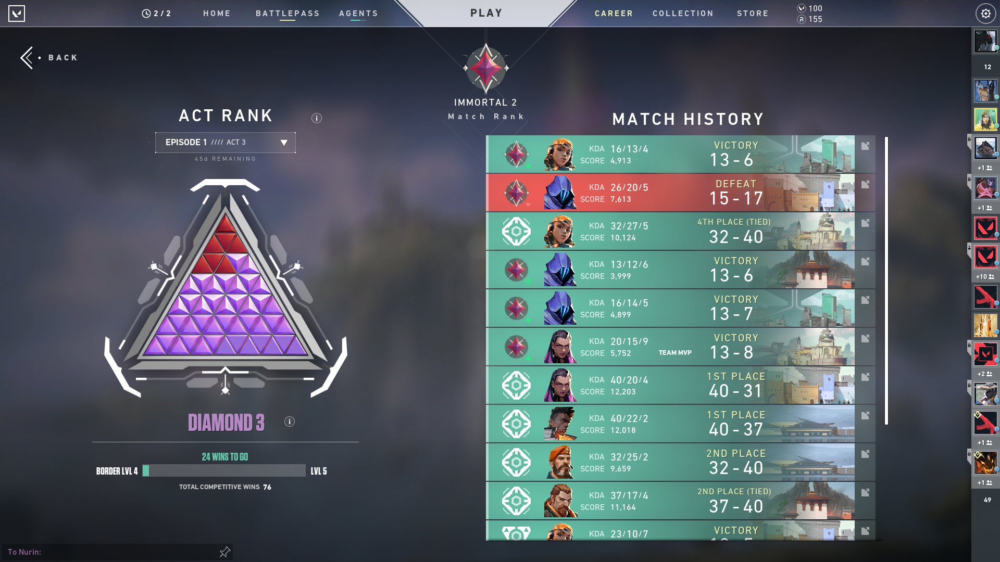
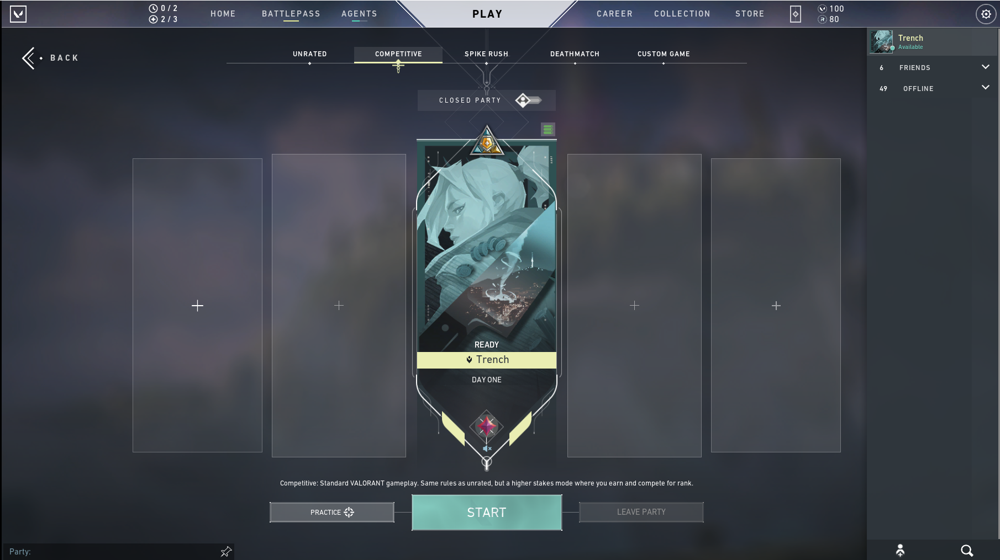

Valorant

GAME PLAY
Valorant is a team-based tactical shooter and first-person shooter set in the near-future.Players play as one of a set of agents, characters designed based on several countries and cultures around the world.In the main game mode, players are assigned to either the attacking or defending team with each team having five players on it. Agents have unique abilities, each requiring charges, as well as a unique ultimate ability which requires charging through kills, deaths, or spike actions. Every player starts each round with a "classic" pistol and one or more "signature ability" charge. Other weapons and ability charges can be purchased using an in game economic system which awards money based on the outcome of the previous round, any kills the player is responsible for, and any actions taken with the spike. The game has an assortment of weapons including secondary guns like sidearms and primary guns like submachine guns, shotguns, machine guns, assault rifles and sniper rifles.There are automatic and semi-automatic weapons that have a shooting pattern which has to be controlled by the player in order to be able to shoot accurately.
In this game is similar to Crossfire or some related guns but the actual recoil of the gun is like in CSGO if you play that one and if you move while firing it will miss your 90% shot thats why you need to stand and shoot to aim properly.
ACHIVEMENTS
I play this game like 3 or 4 months from now but i play it when they are open beta test in NA server and this game is really cool and the gameplay is so nice and every game is enjoyable but sometimes give headache because of lossing streak but this game is really good for me cause for now this is my main game and im addicted but i balance my study and game time. Here i will share to you guys my some of my screenshots of my highest rank.

My higher rank is: Immortal 2

My Current rank is: Immortal 1 (because i playing smurf to help my friends to rank up)
My main agent:
REYNA

My secondary agent:
JETT

My only one clip with 1v5 clutch rank game!
And then thats all and i dont have any screenshots of some of the wins or epic comeback wins because of the hype when you win the game and also the screenshot in the game with fullscreen is not working because of the latest patch (idk why but lately i can screenshot while fullscreen). But this game so enjoyable try it now.